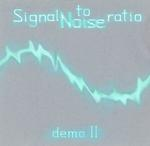

| Artist: | Signal To Noise Ratio |
| Title: | Demo II |
| Label: | self produced |
| Length(s): | 35 minutes |
| Year(s) of release: | 2004 |
| Month of review: | [09/2005] |
| 1) | Eden | 5.34 |
| 2) | Entropia | 13.45 |
| 3) | Kruk | 5.34 |
| 4) | Opium | 10.52 |
Entropia is the first of the two epics on this demo. Again, there is a strongly psychedelic oriented feel as this song is trying the get underway. The band tries to build it up slowly with two guitars, one in each ear more or less. One of is a rhythm guitar, the other plays more strummingly (or is that the bass?). The song becomes wonderful when the longing vocals Ola Jaromin set in. She sings in Polish, but the vocal melody is great. This sounds like the female counterpart to Anekdoten's Liljestrom. In fact, the guitar sound in the laid back second half also reminds of that band. What we may be missing is the mellotron, and the better production, because indeed the sound quality is that of a demo. Nothing wrong with that at this point. Towards the end we get a drum solo of a kind that doesn't sound great: do this only when you know how to record it; drums are difficult to record and this makes the song sound very amateurish. The pace does go up after this short intermezzo.
Kruk is a slowly, acoustic, jangly tune, slow paced with a jazzy piano involved (incidentally, a 'kruk' in Dutch is that on which a piano player sits while he plays). The guitar sound though is more in seventies Crimson style, with some blues leanings. Towards the end, the white noise takes over. I can't see why though.
Opium is another epic and also the closer of this mini album. It continues the psychedelic, early Amon Duul II element: lots of percussion, a bit of an Indian, sitar like influences and the use of flute and fluting synths is quite dominant too. There is plenty of bass on this instrument which accompanies the repetitive guitar. The mood is more of importance here than the shape of the melody. This is quite typical for this introspective brand of psyche. Towards the end, we get more pace and a bit of that Anekdoten feel back.